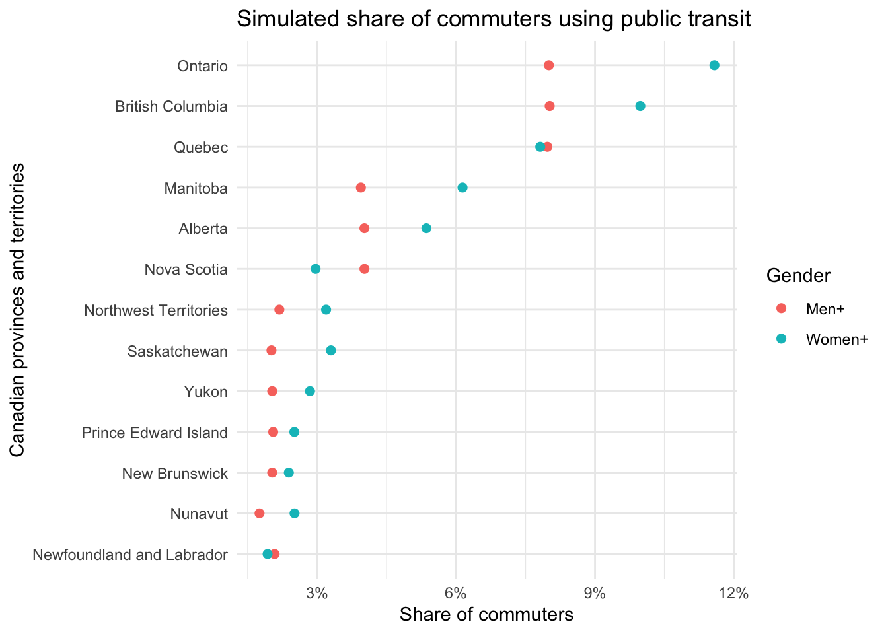

#### Workspace Setup ####
# install.packages("tidyverse")
# install.packages("dplyr")
# install.packages("knitr")
# install.packages("tinytable")
library(tidyverse)
library(dplyr)
library(knitr)
library(tinytable)SOCI 502 Data Story
MILESTONE 1: QUESTION AND SIMULATION
Research Question:
Do Canadian men and women choose different commuting modes and if so, does this gender difference vary by province/territory?
Dataset:
The dataset that I have selected is Table 98-10-0458-01 (Government of Canada 2021) from the 2021 Canadian Census. This dataset includes information on Canadians’ choice of commuting mode, duration of commute, time leaving for work, age, and gender, categorized by province/territory.
Plans for Data Story:
I plan to compare transit use of Canadian men and women across all 13 provinces and territories in Canada to see if there are patterns that can be identified, when comparing transit use with total commuters in each province.
I hypothesize that women across each province will have higher transit use rates than their male counterparts, and that the provinces with the highest rates of transit use will be large provinces with sophisticated transit networks. This will be proven if Women+ transit rates across the 13 Canadian provinces and territories are greater than those of Men+ and if transit rates are highest within “large_tier” provinces and lowest within “small_tier” provinces.
This hypothesis will be disproven if Women+ transit rates are not higher than Men+ transit rates across the 13 Canadian provinces and territories and/or if “large_tier” provinces do not have the highest transit rates (followed by “medium_tier” provinces, then “small_tier” provinces). It is possible, through these scenarios, that another pattern may evolve (i.e., men have higher transit rates, provinces with smaller land mass have higher transit rates, etc.) that I did not originally anticipate.
Simulated Code and Data:
set.seed(723) # makes the simulation reproducible
# Naming simulated objects (note that "provinces" includes both Canadian
# provinces and territories for simplicity)
provinces <- c(
"Newfoundland and Labrador", "Prince Edward Island", "Nova Scotia",
"New Brunswick", "Quebec", "Ontario", "Manitoba", "Saskatchewan", "Alberta",
"British Columbia", "Yukon", "Northwest Territories", "Nunavut"
)# Rough relative size of each workforce (approx. in thousands, per gender)
workforce_k <- c(90, 35, 220, 175, 2000, 3500, 290, 240, 1000, 1100, 10, 10, 10)
# Simulating provinces' workforce numbers by gender with ±10% difference
sim_grid <- expand_grid(geography = provinces, gender = c("Men+", "Women+")) |>
mutate(
total = round(rep(workforce_k, each = 2) * 1000 * runif(26, 0.9, 1.1))
)
sim_grid# A tibble: 26 × 3
geography gender total
<chr> <chr> <dbl>
1 Newfoundland and Labrador Men+ 89529
2 Newfoundland and Labrador Women+ 96500
3 Prince Edward Island Men+ 35118
4 Prince Edward Island Women+ 37654
5 Nova Scotia Men+ 208050
6 Nova Scotia Women+ 234297
7 New Brunswick Men+ 167002
8 New Brunswick Women+ 189127
9 Quebec Men+ 1815278
10 Quebec Women+ 1921510
# ℹ 16 more rows# Baseline probability of using transit, set in three simple tiers (based on
# expectation, not estimates from data)
# Large transit systems (Quebec, Ontario, BC): 8%
# Medium transit systems (Nova Scotia, Manitoba, Alberta): 4%
# All other provinces and territories: 2%
large_tier <- c("Quebec", "Ontario", "British Columbia")
medium_tier <- c("Nova Scotia", "Manitoba", "Alberta")
small_tier <- c("Yukon", "Northwest Territories", "Nunavut",
"Prince Edward Island", "Newfoundland and Labrador",
"Saskatchewan", "New Brunswick")
base_p <- case_when(
provinces %in% large_tier ~ 0.08,
provinces %in% medium_tier ~ 0.04,
provinces %in% small_tier ~ 0.02
)
base_logit <- qlogis(base_p) # convert to the log-odds scale used by the model# Gender effect on the log-odds scale: women are assumed to be higher on average
# (+0.25), and the size of the gap varies randomly by province.
# This variation is the interaction I want to detect.
gender_effect <- 0.25 + rnorm(13, mean = 0, sd = 0.15)
sim_grid <- sim_grid |>
mutate(
province_id = match(geography, provinces),
logit_p = base_logit[province_id] +
if_else(gender == "Women+", gender_effect[province_id], 0),
p_transit = plogis(logit_p),
transit = rbinom(n(), size = total, prob = p_transit),
share = transit / total
) |>
select(geography, gender, transit, total, share)
print(sim_grid)# A tibble: 26 × 5
geography gender transit total share
<chr> <chr> <int> <dbl> <dbl>
1 Newfoundland and Labrador Men+ 1863 89529 0.0208
2 Newfoundland and Labrador Women+ 1862 96500 0.0193
3 Prince Edward Island Men+ 720 35118 0.0205
4 Prince Edward Island Women+ 944 37654 0.0251
5 Nova Scotia Men+ 8366 208050 0.0402
6 Nova Scotia Women+ 6949 234297 0.0297
7 New Brunswick Men+ 3388 167002 0.0203
8 New Brunswick Women+ 4517 189127 0.0239
9 Quebec Men+ 144714 1815278 0.0797
10 Quebec Women+ 150227 1921510 0.0782
# ℹ 16 more rowssim_grid |>
tt() |>
style_tt(j= 1:5, align = "llrrr")|>
format_tt(j = 3:4, digits = 4, num_mark_big = ",", num_fmt = "decimal") |>
format_tt(j = 5, fn = scales::label_percent(accuracy = 0.1)) |>
setNames(c("Province", "Gender", "Transit Users", "Total Commuters", "Share"))| Province | Gender | Transit Users | Total Commuters | Share |
|---|---|---|---|---|
| Newfoundland and Labrador | Men+ | 1,863 | 89,529 | 2.1% |
| Newfoundland and Labrador | Women+ | 1,862 | 96,500 | 1.9% |
| Prince Edward Island | Men+ | 720 | 35,118 | 2.1% |
| Prince Edward Island | Women+ | 944 | 37,654 | 2.5% |
| Nova Scotia | Men+ | 8,366 | 208,050 | 4.0% |
| Nova Scotia | Women+ | 6,949 | 234,297 | 3.0% |
| New Brunswick | Men+ | 3,388 | 167,002 | 2.0% |
| New Brunswick | Women+ | 4,517 | 189,127 | 2.4% |
| Quebec | Men+ | 144,714 | 1,815,278 | 8.0% |
| Quebec | Women+ | 150,227 | 1,921,510 | 7.8% |
| Ontario | Men+ | 281,395 | 3,515,798 | 8.0% |
| Ontario | Women+ | 368,863 | 3,185,667 | 11.6% |
| Manitoba | Men+ | 11,062 | 280,457 | 3.9% |
| Manitoba | Women+ | 18,794 | 306,114 | 6.1% |
| Saskatchewan | Men+ | 4,740 | 235,507 | 2.0% |
| Saskatchewan | Women+ | 8,281 | 251,087 | 3.3% |
| Alberta | Men+ | 40,169 | 999,120 | 4.0% |
| Alberta | Women+ | 54,140 | 1,010,293 | 5.4% |
| British Columbia | Men+ | 82,627 | 1,030,103 | 8.0% |
| British Columbia | Women+ | 119,381 | 1,196,369 | 10.0% |
| Yukon | Men+ | 187 | 9,218 | 2.0% |
| Yukon | Women+ | 285 | 10,018 | 2.8% |
| Northwest Territories | Men+ | 209 | 9,572 | 2.2% |
| Northwest Territories | Women+ | 336 | 10,523 | 3.2% |
| Nunavut | Men+ | 182 | 10,369 | 1.8% |
| Nunavut | Women+ | 270 | 10,750 | 2.5% |
ggplot(sim_grid, aes(x = share, y = fct_reorder(geography, share),
colour = gender)) +
geom_point (size = 2) +
scale_x_continuous(labels = scales::percent) +
labs(title = "Simulated share of commuters using public transit",
x = "Share of commuters", y = "Canadian provinces and territories",
colour = "Gender") +
theme_minimal()
References
Arel-Bundock, Vincent. 2026. Tinytable: Simple and Configurable Tables in ’HTML’, ’LaTeX’, ’Markdown’, ’Word’, ’PNG’, ’PDF’, and ’Typst’ Formats. https://doi.org/10.32614/CRAN.package.tinytable.
Government of Canada. 2021. “Main Mode of Commuting by Commuting Duration, Time Leaving for Work, Age and Gender: Canada, Provinces and Territories, Census Divisions and Census Subdivisions.” https://doi.org/https://doi.org/10.25318/9810045801-eng.
R Core Team. 2024. R: A Language and Environment for Statistical Computing. R Foundation for Statistical Computing. https://www.R-project.org/.
Wickham, Hadley, Mara Averick, Jennifer Bryan, et al. 2019. “Welcome to the tidyverse.” Journal of Open Source Software 4 (43): 1686. https://doi.org/10.21105/joss.01686.
Wickham, Hadley, Romain François, Lionel Henry, Kirill Müller, and Davis Vaughan. 2026. Dplyr: A Grammar of Data Manipulation. https://doi.org/10.32614/CRAN.package.dplyr.